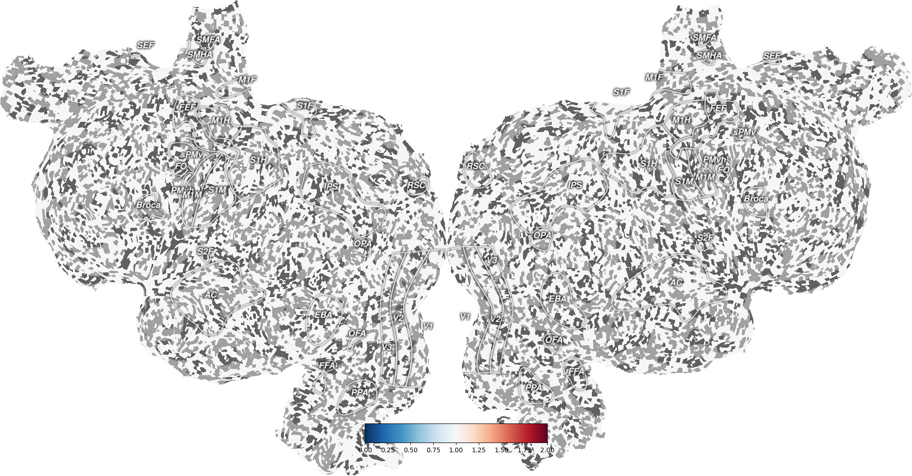
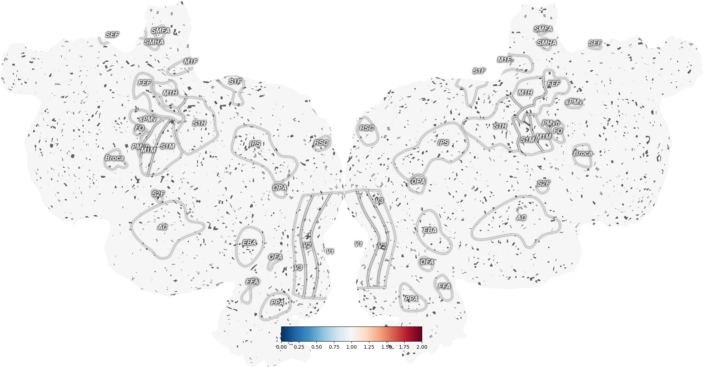

Note
Click here to download the full example code
Ignore NaN (not-a-number) values in thickness mapping¶
By default, pycortex quickshow averages across the thickness of the cortex for each pixel in the resulting flatmap. If any of these layers contain a value of NaN (not-a-number), then the result of the average will also be Nan. This behavior might be undesirable. To avoid it, pass the argument nanmean=True to cortex.quickshow (or cortex.quickflat.make_figure). This will only take the mean of the non-NaN values when averaging across the thickness of cortex. A pixel will only have the value NaN if every voxel between pia and white matter has the value NaN.
- 
- 
Out:
/home/travis/build/gallantlab/pycortex/cortex/quickflat/utils.py:93: RuntimeWarning: invalid value encountered in true_divide
nanmean_data = nonnan_sum / weights_on_nonnan
import cortex
import numpy as np
from matplotlib import pyplot as plt
# create dataset with volume of all 1's
vol = cortex.Volume.empty('S1', 'fullhead', vmin=0, vmax=2) + 1
# set 20% of the values in the dataset to NaN
vol.data[np.random.rand(*vol.data.shape) > 0.8] = np.nan
# plot the volume with nanmean=False
# here a nan in ANY layer of the thickness mapping will result in a nan
# in the final image
# so this image should have many, many holes that show curvature
# and all the non-hole points should have value of 1
_ = cortex.quickshow(vol, nanmean=False, with_curvature=True)
plt.show()
# plot the volume with nanmean=True
# here there should only be a nan in the final image if EVERY layer of the
# thickness mapping has a nan for the given pixel
# so this image should have many fewer holes that show curvature
# and, again, all the non-hole points should have value of 1
_ = cortex.quickshow(vol, nanmean=True, with_curvature=True)
plt.show()
Total running time of the script: ( 0 minutes 5.724 seconds)